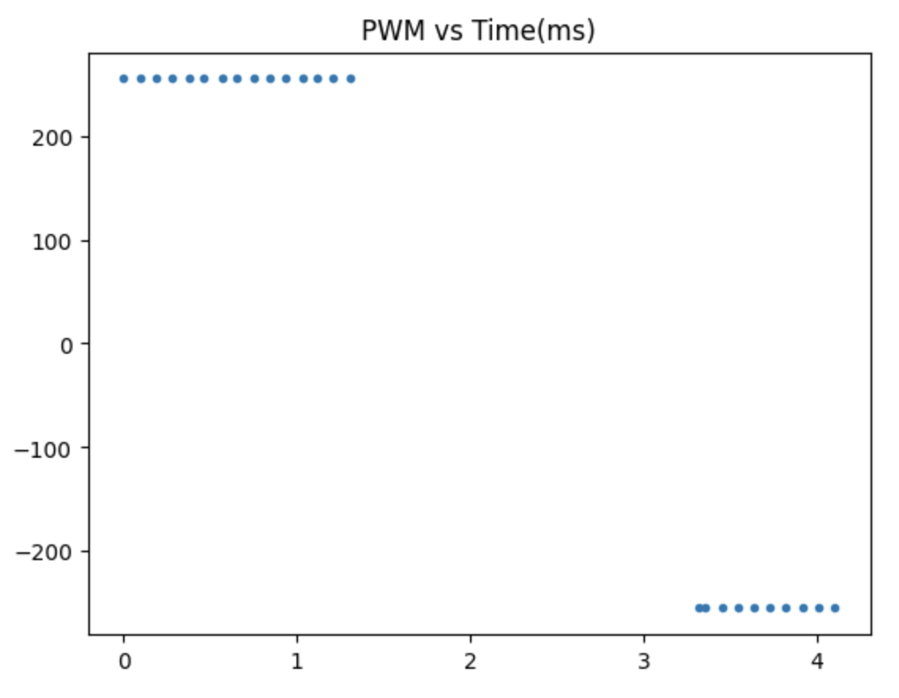
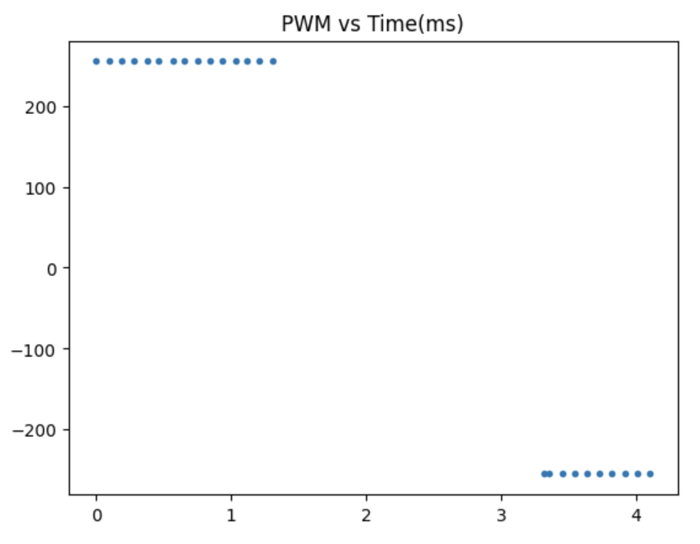

Lab 9: Mapping
In this lab, I will use the Time of Flight sensors and IMU on my robot to map out a static room. This is done by placing the robot at different known positions around the room and rotating it slowly in place while collecting sensor readings, similar to how LiDAR works to map its surroundings.
At first, instead of doing a flip when the robot reversed its velocity, it would start spinning to the left. I realized that the speed at which the right and left motors stop spinning and change direction is different, and the left motor changes direction more quickly than the right motor, causing the robot to spin instead of flip. I was able to determine this through recording slo-mo videos of the wheels as the robot changes direction in midair.
To fix this issue, I included a short delay in my code which drives the car backwards as follows:
This effectively helped both of the motors to switch direction simultaneously. Thanks to this adjustment, the robot was able to perform a flip as it switched from driving forward to backward rapidly. Here are some videos of the robot successfully performing the stunt and the associated position and pwm graphs:
 

The reason there is a 2 second gap in the data is that I used a delay to time when the robot should stop after performing the flip so that in case my robot goes rogue, it won't have that much time to become an occupational hazard. The data before the gap is from the sensor readings right up until the flip, and the data afterwards just shows that the robot is no longer facing the wall and is detecting whatever object is in its way.
Here are some bloopers: